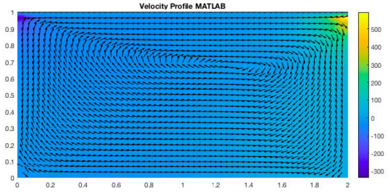

GOAL Comparison of OpenFOAM and MATLAB simulation of lid-driven cavity flow. BACKGROUND I followed Professor Barba's "12 steps to Navier-Stokes equations" using MATLAB instead of Python. This process covers Burger's equation, Euler equations, cavity flow, and the SOD shock tube problem. I coded a MATLAB script to solve the 2D Navier Stokes equations for lid-driven cavity flow (below). Pressure correction: Initially, velocity everywhere is zero. Dirichlet boundary condition at the top, where the wall speed is 1 m/s right. Neumann boundary elsewhere (d/dx=0, d/dy=0). VELOCITY PROFILES OPENFOAM MATLAB  Quantitative Comparison of OpenFOAM and MATLAB Results Plots of velocity magnitude values plotted over the horizontal (LEFT) and vertical (RIGHT) midlines. This is an intermediate stage. The OpenFOAM velocity profile was plotted with a default arrow length, pointing right, which is was not overwritten by zero velocity at the walls. Solutions are grid converged, as confirmed by checking additional grid sizing (not shown here). As numerical convergence is reached, OpenFOAM and MATLAB solutions overlap.